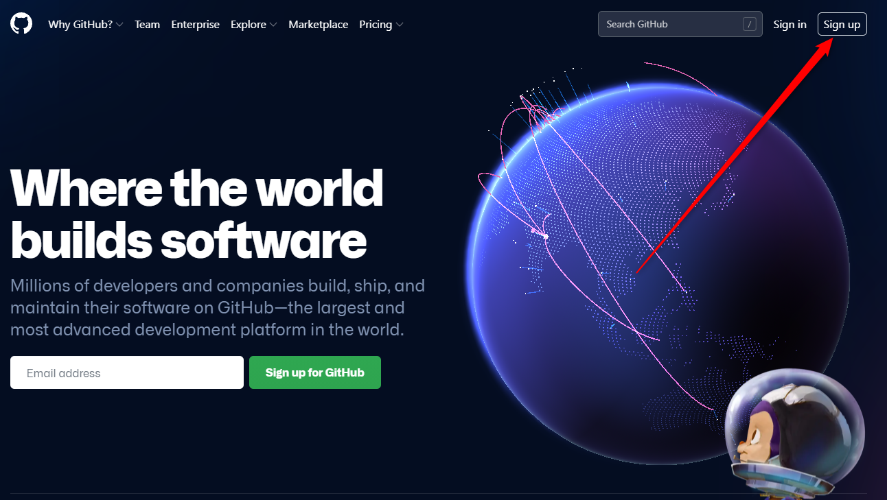
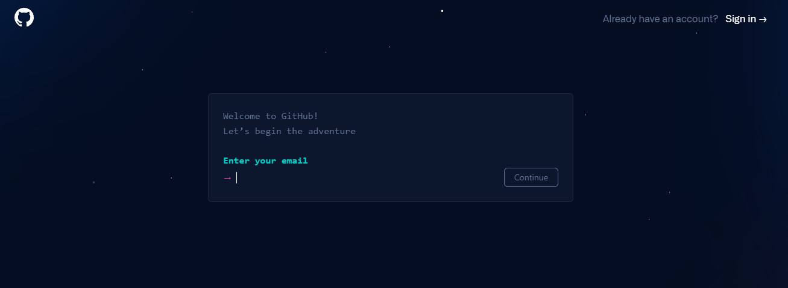

Находим кнопку «Sign up» в правом верхнем углу сайта и жмем на нее:
После чего откроется вот такая страница:
На ней необходимо ввести электронную почту, к которой будет привязан ваш GitGub аккаунт.
И вот, пожалуйста, всего лишь второй шаг, а мы уже принимаем важнейшие решения, типа:
К какой почте будет привязана главная социальная сеть, которая уже через несколько минут изменит мою жизнь?
Стоит ли нам прокрастинировать по этому поводу? Конечно же нет! Мы просто переходим к следующему шагу, где и подумаем:
Какое имя электронной почты будет для нас самым правильным?